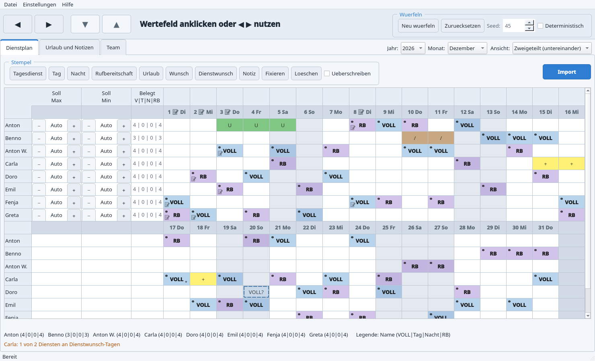
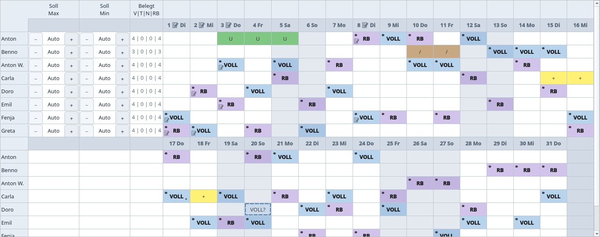
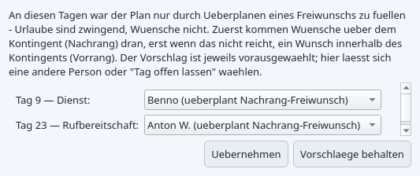
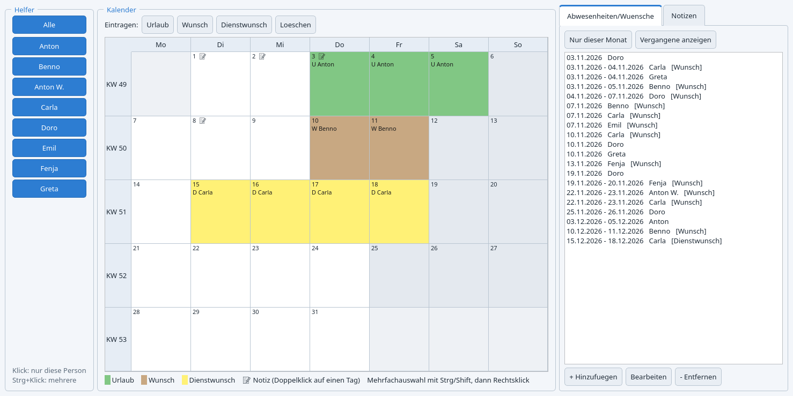
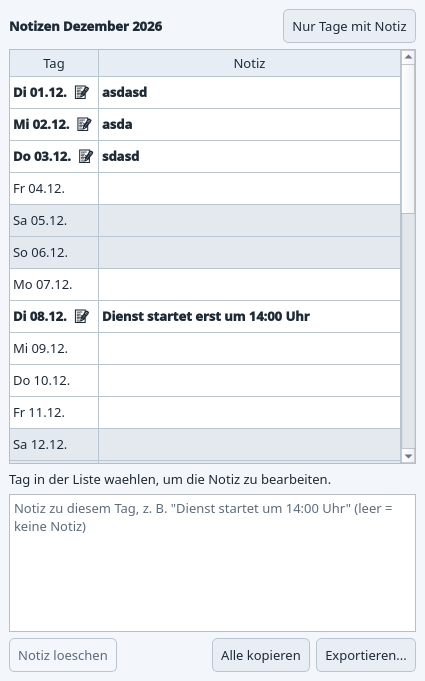
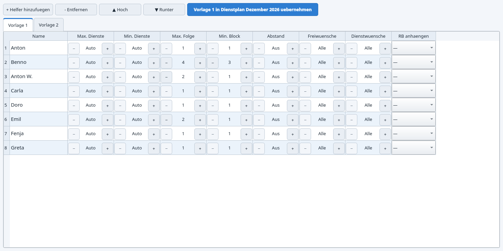
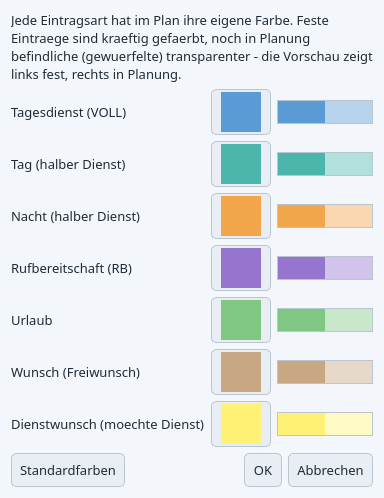
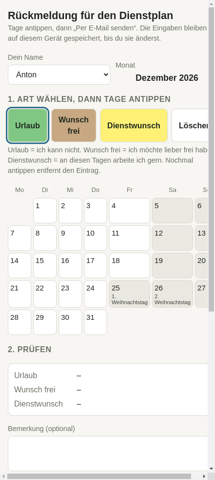
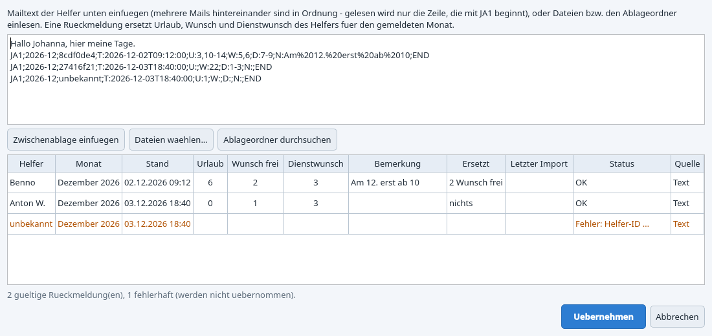

Johanna Assistenten – Bedienung
Das Programm verteilt die Tage eines Monats fair auf das Assistenz-Team: jeder Tag braucht einen Tagesdienst (oder Tag + Nacht) und eine Rufbereitschaft. Man setzt Fixpunkte von Hand, lässt den Rest würfeln, fixiert, was gefällt, und würfelt den Rest neu. Diese Seite erklärt die Bedienung; die Regeln der Vergabe stehen in der Planungslogik.
Inhalt
- Das Fenster
- Monat wählen
- Steuerleiste
- Tab „Dienstplan"
- Tab „Urlaub und Notizen"
- Tab „Team"
- Einstellungen
- Menü „Datei"
- Rückmeldungen der Helfer
- Speichern und Datensicherheit
- Updates
- Tastenkürzel
1. Das Fenster

- Menü: Datei (Speichern, Exporte, Import, Datensicherung), Einstellungen (Farben, Farbschema, Updates), Hilfe.
- Steuerleiste: übergroße Tasten für das zuletzt angeklickte Wertefeld, rechts die Gruppe „Würfeln" (nur im Dienstplan).
- Tab-Zeile: die drei Tabs, rechts der gemeinsame Monatswähler und (im Dienstplan) die Ansicht.
- Statuszeile: Meldungen wie „Automatisch gespeichert" oder das Ergebnis eines Imports.
Der Fenstertitel zeigt den geöffneten Monat; ein * dahinter heißt: Änderungen sind noch nicht geschrieben (das erledigt der Autosave in spätestens 15 Sekunden).
2. Monat wählen
Jahr und Monat gelten für alle drei Tabs gleichzeitig. Beim Wechsel wird der bisherige Monat gespeichert und der neue geladen; ein noch nicht vorhandener Monat beginnt leer, mit dem aktuellen Team. Beim nächsten Start öffnet sich der zuletzt bearbeitete Monat.
3. Steuerleiste
Alle Zahlenwerte im Programm (Soll-Dienste, Max. Folge, Kontingente …) sind Felder mit Minus/Plus-Tasten. Klickt man eines an, zeigt die Steuerleiste es groß und man kann es mit ▲/▼ verstellen (gedrückt halten zählt weiter). ◀/▶ wandern durch alle Felder des aktiven Tabs, ohne die kleinen Tasten treffen zu müssen.
4. Tab „Dienstplan"
Das Raster

Was eine Zelle zeigt:
- VOLL, Tag, Nacht, RB
- Tagesdienst, halber Dienst (Tag-Hälfte bzw. Nacht-Hälfte, zählt je 0,5), Rufbereitschaft. Jede Art hat ihre Farbe (Einstellungen → Farben).
- Kräftig oder blass
- Kräftig = fest (von Hand gestempelt oder fixiert). Blass mit Punkt oben links = vom Würfel vergeben, noch in Planung – beim nächsten Würfeln wird es neu verteilt.
- 🔒 Schloss
- Fixiert: übersteht jedes Neuwürfeln.
- U
- Urlaub. Die Person wird an dem Tag nie eingeplant.
- /
- Wunsch (frei): die Person möchte frei haben. Wird respektiert, kann aber im Notfall überplant werden (siehe Planungslogik). Ein kleines Dreieck unten rechts in einer belegten Zelle heißt: hier wurde ein Wunsch überplant.
- +
- Dienstwunsch: die Person möchte an dem Tag gern arbeiten. Liegt ein Dienst darauf, steht das „+" klein in der Ecke (Wunsch erfüllt).
- VOLL? mit gestricheltem Rahmen
- Kandidat: mehrere Personen sind für denselben Dienst vorgeschlagen, einer wird gewählt (siehe unten).
- 📝
- Der Tag hat eine Notiz (im Tageskopf und bei allen an dem Tag Eingeteilten). Der Text erscheint als Tooltip und in der Zeile unter dem Raster, sobald eine Zelle des Tages angeklickt ist.
- Graue Spalten
- Wochenende oder bayerischer Feiertag (nur Anzeige, keine Regel).
Stempel
| Stempel | Wirkung beim Klick auf eine Zelle |
|---|---|
| Tagesdienst, Tag, Nacht, Rufbereitschaft | Setzt den Dienst – gestempelte Dienste sind automatisch fixiert. Derselbe Stempel noch einmal entfernt ihn. Ein Würfel-Vorschlag einer anderen Person, der dieselbe Abdeckung liefern würde, weicht. |
| Urlaub, Wunsch, Dienstwunsch | Setzt bzw. entfernt die Tagesart. Ein Tag hat je Person nur eine davon. Ein Würfel-Eintrag weicht Urlaub/Wunsch, ein fester Eintrag nur mit „Überschreiben". Zusammenhängende Tage werden zu Zeiträumen (Tab „Urlaub und Notizen"). |
| Notiz | Öffnet die Tagesnotiz (gilt für den Tag, nicht für die Person). |
| Fixieren | Fixiert einen Eintrag bzw. löst die Fixierung. Bei einem Kandidaten: feste Wahl. |
| Löschen | Entfernt jeden Eintrag, auch fixierte. |
| Überschreiben (Kästchen) | Aus (Standard): Einträge eines anderen Typs bleiben unangetastet. An: der Stempel ersetzt sie. |
Mehrere Zellen auf einmal: mit Strg- oder Umschalt-Klick markieren, dann Rechtsklick. Das Menü bietet alle Stempel für die ganze Auswahl, dazu „Kandidat fest wählen" und „Notiz bearbeiten".
Kandidaten: mehrere Personen für einen Dienst
Für Tagesdienst und Rufbereitschaft dürfen mehrere Personen auf denselben Tag gestempelt werden. Hat ein Tag genau einen manuellen Eintrag, ist er fest. Stempelt man denselben Typ für eine zweite Person, werden beide zu Kandidaten (blass, „?", gestrichelt): der Tag ist wieder „zu wählen". Neu würfeln wählt einen davon nach den Fairness-Regeln (die Wahl ist wie ein Würfel-Eintrag markiert), per Rechtsklick → „Kandidat fest wählen" oder mit dem Fixieren-Stempel entscheidet man selbst. Nicht gewählte Kandidaten zählen nirgends mit. Entfernt man alle bis auf einen, wird dieser wieder ein normaler fester Eintrag.
Würfeln
- Fixpunkte stempeln (z. B. „Martha kommt am 1.–2. VOLL").
- Neu würfeln füllt alle übrigen Tage nach den Regeln der Planungslogik. Würfel-Einträge sind blass mit Punkt.
- Was gefällt, fixieren; dann wieder würfeln – nur nicht fixierte Würfel-Einträge werden neu verteilt. Manuelles bleibt immer stehen.
- Zurücksetzen löscht alle nicht fixierten Würfel-Einträge; Manuelles bleibt.
Seed und Deterministisch: mit „Deterministisch" ergeben gleicher Seed und gleiche Fixpunkte immer denselben Plan (reproduzierbar, Seed ändern = andere Variante). Ohne „Deterministisch" fällt jeder Klick anders aus.
Konflikt-Dialog

Urlaub ist zwingend, Wünsche sind es nicht. Ließ sich ein Tag nur besetzen, indem jemand an einem Wunsch-Tag eingeplant wurde, zeigt der Dialog diese Entscheidungen: Tag, Art (Dienst oder Rufbereitschaft) und eine Auswahl mit dem Vorschlag vorausgewählt, anderen überplanbaren Personen (zuerst solche mit Wünschen über ihrem Kontingent, dann innerhalb) und „Tag offen lassen". Übernehmen wendet die Wahl an (dabei wird mit demselben Seed neu gewürfelt; neue Konflikte erscheinen erneut), Vorschläge behalten lässt es, wie es ist. Ein überplanter Wunsch bleibt sichtbar eingetragen und wird unter dem Raster gemeldet.
Zusammenfassung und Warnungen
| Meldung | Bedeutung |
|---|---|
| Unbesetzte Tage / nur halb abgedeckte Tage | Es fehlt ein Tagesdienst bzw. die zweite Hälfte (Tag/Nacht). |
| Tage ohne Rufbereitschaft | Noch niemand in RB. |
| Tag doppelt besetzt / 2 Rufbereitschaften | Mehr Abdeckung als nötig, z. B. von Hand neben einem fixierten Würfel-Eintrag. |
| X Dienste (max. Y) / nur X Dienste (min. Y) | Soll-Spanne des Helfers verletzt. |
| X Rufbereitschaften bei Y Diensten (muss gleich sein) | Jeder soll genauso viele RB-Tage wie Dienste haben (±0,5 bei halben Diensten). |
| … Tage am Stück (max. …) / nur … Tag(e) am Stück (kommt mind. …) | Folge zu lang bzw. für Helfer mit weiter Anreise zu kurz. |
| nur … freie Tage zwischen den Einsätzen | Mindestabstand unterschritten (nur von Hand möglich). |
| Urlaub überplant / Freiwunsch überplant | Ein Eintrag liegt auf einem Urlaubs- bzw. Wunsch-Tag. |
| X von Y Diensten an Dienstwunsch-Tagen | Weniger Dienstwünsche erfüllt als gewünscht (Hinweis, keine Regelverletzung). |
| mehrere Kandidaten, keiner gewählt | Der Tag wartet auf eine Wahl (Würfeln oder von Hand). |
| Einträge eines nicht (mehr) vorhandenen Helfers | Reste eines entfernten Helfers – einfach löschen. |
Ansicht
„Breit" zeigt den Monat in einer Zeile, „Zweigeteilt" die zweite Hälfte unter der ersten (größere Zellen). Die Wahl wird gemerkt.
5. Tab „Urlaub und Notizen"

- Helfer-Buttons: Klick = nur diese Person, Strg+Klick = mehrere, „Alle" = alle. Für die gewählten Helfer wird angezeigt und eingetragen.
- Kalender in Wochenform. Bei einer Person: Urlaub , Wunsch , Dienstwunsch . Bei mehreren: die Namen mit U/W/D davor. 📝 = Notiz, heute ist fett.
- Eintragen: Stempel Urlaub | Wunsch | Dienstwunsch | Löschen wählen und Tage anklicken (Klick setzt oder entfernt; haben alle gewählten Helfer den Tag schon, wird er bei allen entfernt). Mehrere Tage mit Strg/Umschalt markieren, dann Rechtsklick.
- Liste „Abwesenheiten/Wünsche": alle Einträge der gewählten Helfer, chronologisch und monatsübergreifend, Zeiträume und Einzeltage, mit [Wunsch] bzw. [Dienstwunsch]. Filter „Nur dieser Monat" und „Vergangene anzeigen" (der angezeigte Monat ist immer zu sehen). Hinzufügen, Bearbeiten (auch Doppelklick) und Entfernen über Dialoge mit Datumsfeldern. Ein Klick auf einen Eintrag in einem anderen Monat wechselt alle Tabs dorthin.

Notizen sind Freitext je Tag („Dienst startet um 14:00 Uhr"). Ein Klick in die Notiz-Spalte bearbeitet sie in der Tabelle (Enter übernimmt), mehrzeilig bequemer im Editor darunter; leer = gelöscht. „Nur Tage mit Notiz" blendet den Rest aus. „Alle kopieren" legt alle Notizen des Monats samt Eingeteilten in die Zwischenablage, „Exportieren…" speichert sie als Textdatei. Ein Klick im Kalender wählt den Tag in der Liste, Doppelklick springt in den Editor.
6. Tab „Team"

- + Helfer hinzufügen legt „Neuer Helfer" an – Name durch Doppelklick in die Namensspalte ändern (gilt sofort, in beiden Vorlagen). – Entfernen fragt nach und löscht auch die Einträge der Person im geöffneten Monat; ihre Abwesenheiten gehen verloren. ▲ Hoch / ▼ Runter ändern die Reihenfolge (= Zeilen im Dienstplan und in den Exporten).
- Vorlage 1 / Vorlage 2: je ein kompletter Satz Einstellungen pro Helfer, den man getrennt vorbereiten kann. Änderungen wirken nicht sofort auf den Plan – erst der blaue Button „Vorlage … in Dienstplan Monat übernehmen" kopiert die gezeigte Vorlage in den geöffneten Monat. Jeder Monat merkt sich seine übernommenen Einstellungen.
| Spalte | Bedeutung |
|---|---|
| Max. Dienste / Min. Dienste | Soll-Spanne im Monat. „Auto" = kein fester Wert (gleichmäßig verteilen). Max ist eine harte Grenze, Min ein Verteilungsziel. Max steht links, weil es Min begrenzt. |
| Max. Folge | Höchstens so viele Tage am Stück (Dienst und RB je getrennt gezählt). |
| Min. Block | Mindestens so viele Tage am Stück – für Helfer mit weiter Anreise; der Würfel plant sie nur in Blöcken dieser Länge. |
| Abstand | Mindestens so viele freie Tage zwischen zwei Einsätzen derselben Person (Dienst und RB zusammen). Harte Regel. „Aus" = 0. |
| Freiwünsche | Kontingent der Wunsch-Tage (frei): so viele je Monat haben Vorrang, weitere Nachrang. „Alle" = jeder Wunsch zählt wie Vorrang. |
| Dienstwünsche | Kontingent der Dienstwunsch-Tage: so viele Dienste sollen auf die gewünschten Tage fallen („3 Dienste an 7 Möglichkeiten"). „Alle" = so viele wie möglich. |
| RB anhängen | Rufbereitschaft als gleich langen Block direkt vor, nach oder auf beide Seiten des Dienstblocks legen (Anwesenheit am Stück). |
Die Soll-Spanne lässt sich auch direkt im Dienstplan ändern (Spalten Soll Max / Soll Min) – das gilt nur für diesen Monat.
7. Einstellungen

- Farben…: nicht die Helfer, sondern die Eintragsarten tragen die Farbe (VOLL, Tag, Nacht, RB, Urlaub, Wunsch, Dienstwunsch). Vorschau links fest, rechts in Planung. „Standardfarben" setzt zurück. Die Farben gelten im Raster, im Urlaubs-Kalender und im PDF.
- Farbschema: vier Paletten, je hell und dunkel, für die ganze Oberfläche.
- Nach Updates suchen…: siehe Updates.
8. Menü „Datei"
| Eintrag | Wirkung |
|---|---|
| Monat leeren | Löscht alle Einträge des Monats (Notizen und Abwesenheiten bleiben). |
| Plan-Datei öffnen… | Lädt eine mit „Speichern unter…" erzeugte Datei – samt dem darin gespeicherten Team. Achtung: beim nächsten Speichern ersetzt das Team der Datei das aktuelle; das Programm fragt vorher. |
| Speichern (Strg+S) | Schreibt sofort (sonst macht es der Autosave). |
| Speichern unter… (Strg+Umschalt+S) | Zusätzliche Kopie des Plans samt Team an beliebiger Stelle, z. B. als Variante. |
| Datensicherung erstellen… | Speichert und packt den ganzen Datenordner als ZIP an einen gewählten Ort. |
| Rückmeldungen importieren… (Strg+I) | Siehe Rückmeldungen. |
| Ablageordner aktualisieren | Liest neue Antworten aus dem Ordner „Formularantworten" ein und legt fehlende Monatsordner an. |
| Exportieren → CSV | Zwei Tabellen (Plan, Zusammenfassung) als Textdateien. |
| Exportieren → Excel | Plan und Zusammenfassung als .xlsx. |
| Exportieren → PDF | Aushang für das Team, A4 Hochformat: Seite 1 der ganze Monat (beide Hälften untereinander), Seite 2 Notizen, Zusammenfassung, Legende, Feiertage. Zeigt nur Dienste und Rufbereitschaften – keine Urlaube, keine Wünsche. |
| Exportieren → Notizen (Text) | Alle Notizen des Monats als Textdatei. |
| Exportieren → Rückmeldeformular (HTML)… | Erzeugt das Formular für die Helfer, siehe unten. |
9. Rückmeldungen der Helfer
Die Helfer melden ihre Monatsdaten (Urlaub, Wunsch frei, Dienstwunsch) per E-Mail. Damit niemand abtippen muss, gibt es ein Formular, das jeder bedienen kann, und einen Import, der die Antworten eindeutig einliest – ohne Raten.
Formular erzeugen und verschicken
- Den Monat öffnen, für den die Rückmeldungen gebraucht werden.
- Datei → Exportieren → Rückmeldeformular (HTML)…: E-Mail-Adresse eintragen, an die die Helfer antworten sollen (wird gemerkt), Zielordner bestätigen (vorgeschlagen wird der Monatsordner unter „Formularantworten").
- Die Datei
rueckmeldung_JJJJ_MM.htmlals Anhang an alle Helfer schicken, z. B. im Webmailer. Sie enthält die Helfer des Monats, den Monat und die Adresse.

Beim Helfer: die Datei im Browser öffnen (PC oder Handy, ohne Internet), Namen wählen, eine Art antippen (Urlaub, Wunsch frei, Dienstwunsch, Löschen), dann die Tage im Kalender. Unten stehen Zusammenfassung, ein Bemerkungsfeld und der fertige Mailtext. „Per E-Mail senden" öffnet das Mailprogramm mit Betreff und Text, „Text kopieren" legt ihn in die Zwischenablage, „Als Datei speichern" lädt ihn als Textdatei. Die Eingaben bleiben im Browser des Geräts gespeichert. Der Mailtext endet mit einer Zeile wie
JA1;2026-11;8cdf0de4;T:2026-10-20T14:03:05;U:3,10-14;W:5,6;D:7-9;N:Am%2012.;END
Das ist die Maschinenzeile: Monat, Helfer, Zeitstempel („Stand"), Urlaub (U), Wunsch frei (W), Dienstwunsch (D) als Tageslisten, Bemerkung (N). Sie muss unverändert mitgeschickt werden; Umbrüche durch das Mailprogramm stören nicht.
Antworten einlesen

Drei Wege, alle lesen dieselbe Zeile:
- Import-Button rechts neben den Stempeln oder Datei → Rückmeldungen importieren… (Strg+I): Mailtext aus dem Webmailer kopieren und oben einfügen (mehrere Mails hintereinander sind in Ordnung; liegt schon eine Rückmeldung in der Zwischenablage, steht sie beim Öffnen drin). Oder „Dateien wählen…" (.txt, .eml, .html) oder „Ablageordner durchsuchen". Die Tabelle prüfen, dann Übernehmen.
- Ablageordner „Formularantworten" neben dem Programmordner, je Monat ein Unterordner (z. B.
2026-11_November; eine LIESMICH.txt liegt dabei). Antworten dort ablegen: den Mailtext als .txt speichern, die Mail als .eml, oder die Textdatei aus dem Anhang. Beim Programmstart und über Datei → Ablageordner aktualisieren werden alle neuen oder geänderten Dateien ab dem heutigen Monat eingelesen; das Ergebnis wird gemeldet. Die Monatsordner für die nächsten sechs Monate legt das Programm selbst an.
eingelesen.json); protokoll.txt hält fest, was wann übernommen wurde, samt Bemerkung. Fehlerhafte Zeilen (unbekannter Helfer, Tag nicht im Monat …) werden gezeigt und nicht übernommen.10. Speichern und Datensicherheit
- Autosave: sobald es Änderungen gibt, schreibt das Programm sie spätestens nach 15 Sekunden; außerdem bei Monatswechsel, beim Beenden und mit Strg+S.
- Beenden mit offenen Änderungen fragt: Speichern und beenden / Ohne Speichern beenden / Abbrechen.
- Alle Daten liegen als JSON im Ordner
dataneben dem Programm:team.json(Team, Abwesenheiten, Wünsche, Vorlagen),plans/plan_JJJJ_MM.json(ein Plan je Monat mit Notizen und Einstellungen),settings.json. Jede Datei wird erst komplett neu geschrieben und dann an ihren Platz verschoben; die vorige Fassung bleibt als.bak. Ist eine Datei beschädigt, greift das Programm auf die Sicherungskopie zurück und sagt Bescheid. - Datensicherung: bei jeder neuen Programmversion wird
dataautomatisch nachdata/sicherungenkopiert (die letzten zehn bleiben); von Hand jederzeit über Datei → Datensicherung erstellen… (ZIP). Zurückholen: Programm schließen, Ordnerdataaus der Sicherung in den Programmordner kopieren.
11. Updates
Die installierte Windows-Version prüft beim Start, ob es auf GitHub eine neue Version gibt, und bietet sie an (Jetzt installieren / Später / Diese Version überspringen). Vor dem Update wird gespeichert; das Programm beendet sich, tauscht den Programmordner aus und startet neu. Der Datenordner, die Vorlagen-Anpassungen neben dem Programm und der Ablageordner bleiben unangetastet. Jederzeit von Hand: Einstellungen → Nach Updates suchen…
12. Tastenkürzel
| Taste | Wirkung |
|---|---|
| Strg+S | Speichern |
| Strg+Umschalt+S | Speichern unter… |
| Strg+I | Rückmeldungen importieren… |
| F1 | Diese Hilfe |
| Strg/Umschalt + Klick | Mehrere Zellen oder Tage markieren (dann Rechtsklick) |
Weiter: Planungslogik – wie der Würfel vergibt und woran man Fairness erkennt